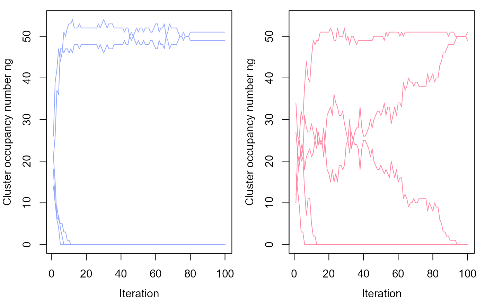
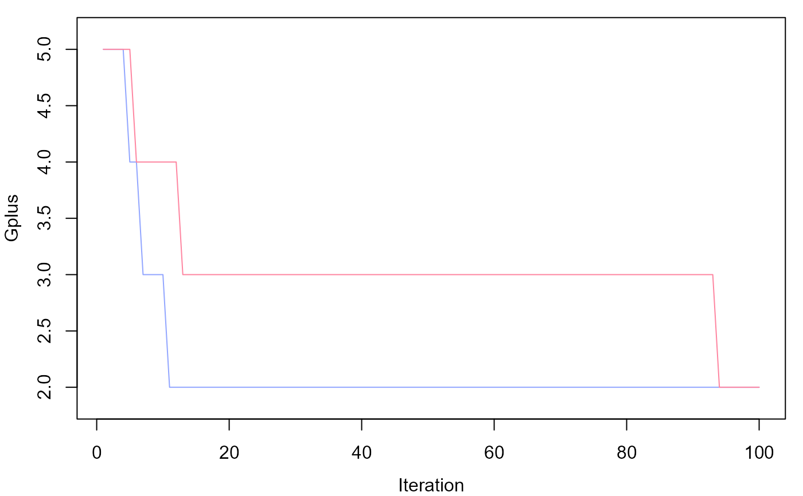
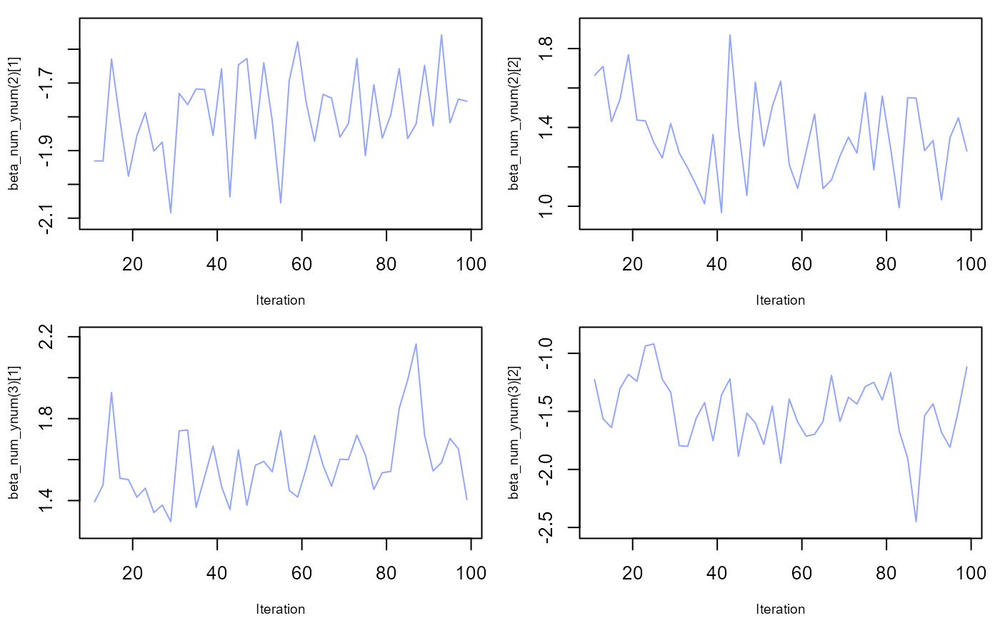
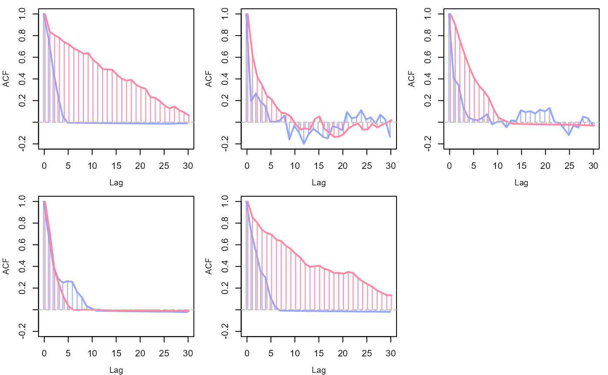
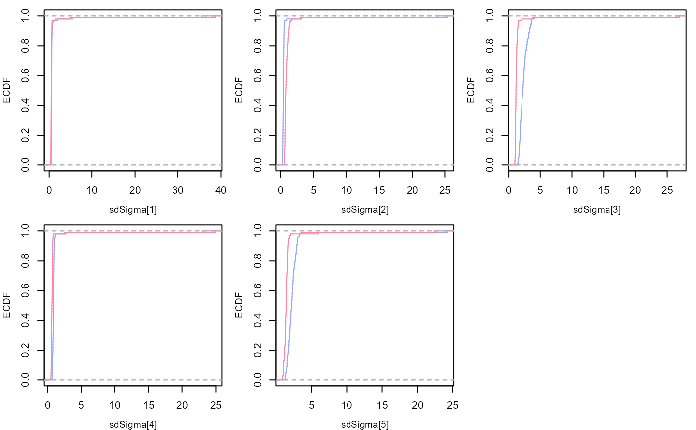
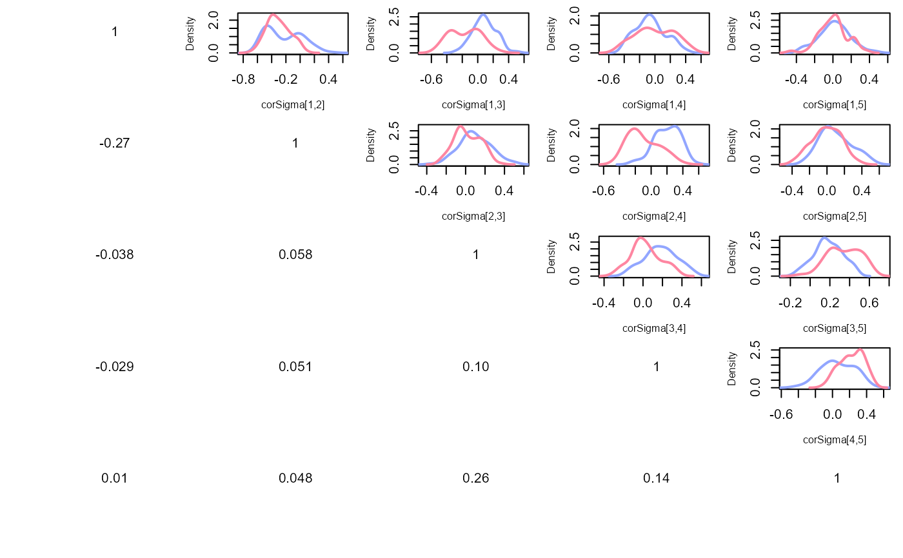
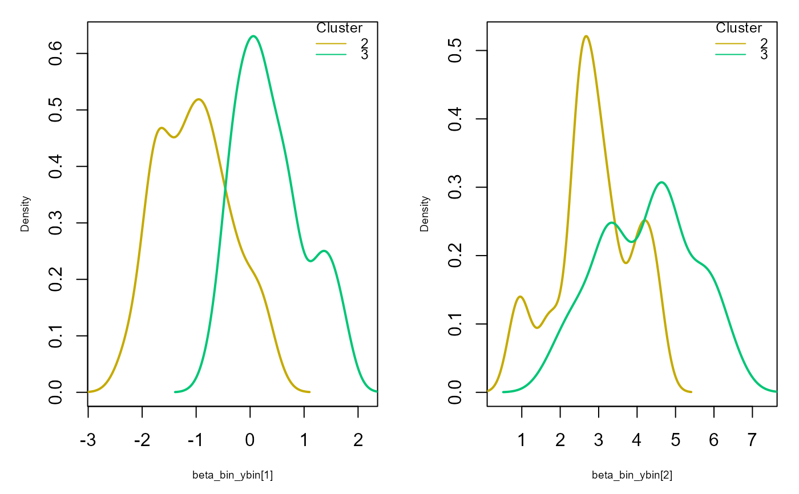
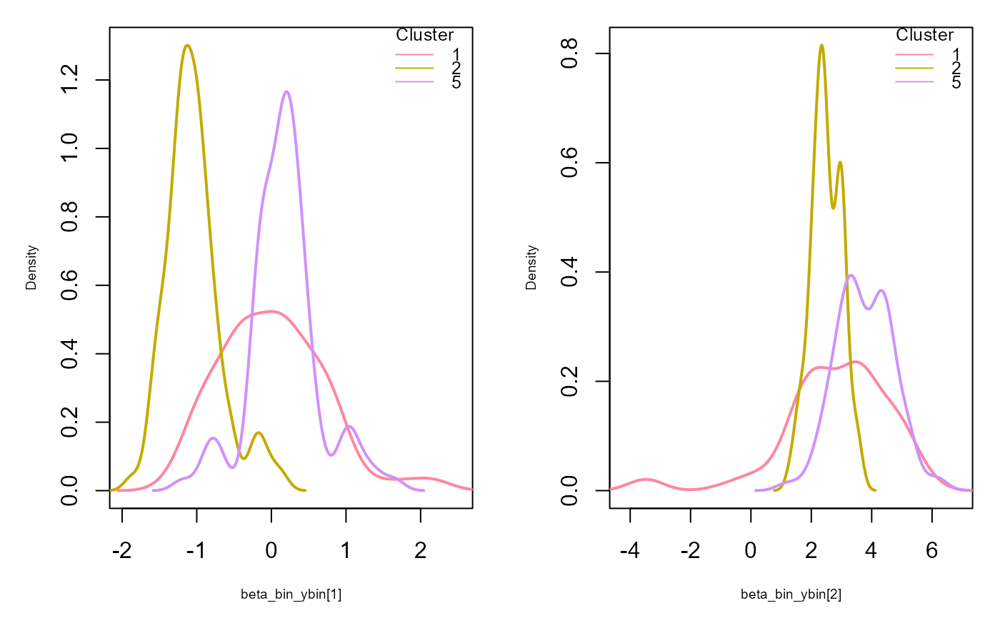
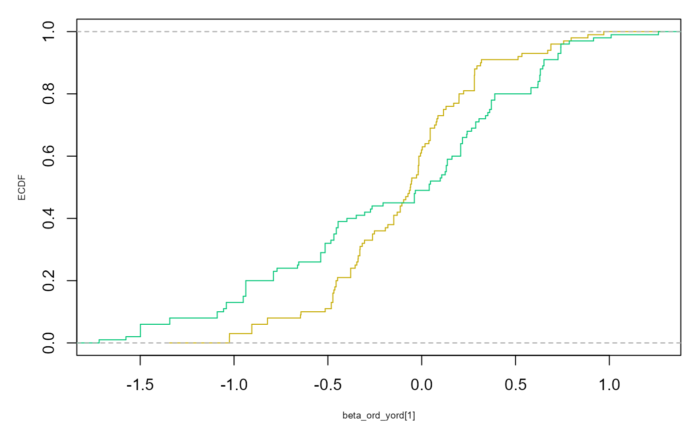
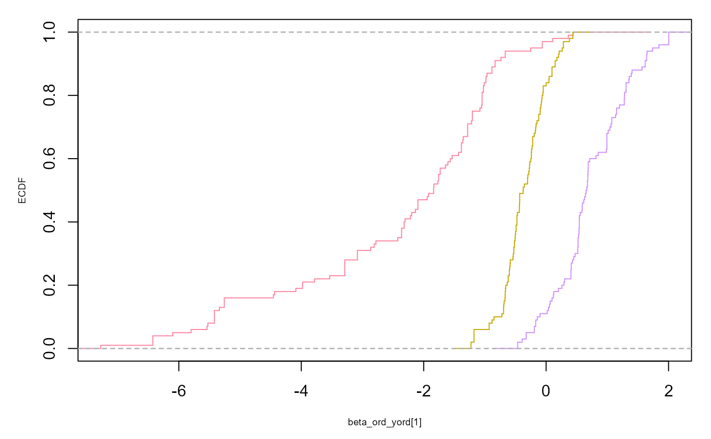

Plot the Output of clustGLMM
plot.clustglmm.RdTriggers plotting functions for selected parameter depending on the choice of the plot.
Usage
# S3 method for class 'clustglmm'
plot(x, what="ng", which="traceplots", ng_trace_chain_split=TRUE, ...)Arguments
- x
an object of class
"clustglmm", an output of functionclustGLMM.- what
a string containing the name of the parameter.
- which
a string declaring the type of the plot to be created.
- ng_trace_chain_split
a logical indicating whether cluster occupancy numbers
ngof all clusters should be plotted together in one plot separately for each chain (TRUE), or separate plots comparing different chains for each cluster (FALSE).- ...
other arguments.
Details
Depending on which the following functions are called:
- ACF
creates auto-correlation function plot, calls
plot_ACForplot_ACF_param.- ECDF
creates empirical cumulative distribution function plot, calls
plot_ECDForplot_ECDF_param.- kerneldensity
creates kernel density estimator plot, calls
plot_kerneldensityorplot_kerneldensity_param.- traceplots
creates traceplots (samples vs iteration), calls
plot_traceplotsorplot_traceplots_param.- clusters_ECDF
creates empirical cumulative distribution function plot where different clusters are compared (
whatneeds to be a cluster-specific parameter), callsplot_clustersorplot_clusters_ECDF_param.- clusters_kerneldensity
creates kernel density estimator plot where different clusters are compared (
whatneeds to be a cluster-specific parameter), callsplot_clustersorplot_clusters_kerneldensity_param.
If the user tries to specify one of: gspec or dimspec, it is treated as an attempt to plot only a single scalar parameter (functions without ..._param).
Be careful to specify the dimensions appropriately (including yspec).
Inner function get_scalar_samples triggers a warning or even an error if misspecified.
Otherwise if neither gspec nor dimspec are given, then ..._param function is triggered.
It is designed to create plots for all chains and all dimensions related to the given what model parameter.
The output is organized into multiple carefully arranged layout.
The only way to plot a smaller subset of parameters is via yspec argument, which accepts even multiple outcome values.
However, only plots for an intersection of given and plausible outcomes for the given parameter are returned.
These functions except also burnin (initial part of the chain to be ignored), thin (plot only every thinth sample) and chains (a vector of chain numbers to be plotted).
References
Vávra, J., Komárek, A., Grün, B., Malsiner-Walli, G. Clusterwise multivariate regression of mixed-type panel data. Stat Comput 34, 46 (2024). https://doi.org/10.1007/s11222-023-10304-5
Examples
### Get some longitudinal mixed type data
### here generated by generate_longitudinal_mixed_type_data()
data("longitudinal_mixed_type_data")
# Examples here demonstrate the basic use of the available functions on a toy dataset.
# For more thorough analyses see the vignettes.
###-----------------------------------------------------------------------------
### Prepare inputs for clustGLMM()
###-----------------------------------------------------------------------------
id <- "i"
family <- c("num", "poi", "bin", "ord", "cat")
names(family) <- Ys <- c("ynum", "ypoi", "ybin", "yord", "ycat")
## Create list of formulae for each outcome
formula <- list()
for(y in Ys){
formula[[y]] <- list()
formula[[y]]$fixed <- ~ f
formula[[y]]$group <- ~ x
formula[[y]]$random <- ~ 1
formula[[y]]$offset <- ""
}
formula
#> $ynum
#> $ynum$fixed
#> ~f
#> <environment: 0x000001cfde98e1c8>
#>
#> $ynum$group
#> ~x
#> <environment: 0x000001cfde98e1c8>
#>
#> $ynum$random
#> ~1
#> <environment: 0x000001cfde98e1c8>
#>
#> $ynum$offset
#> [1] ""
#>
#>
#> $ypoi
#> $ypoi$fixed
#> ~f
#> <environment: 0x000001cfde98e1c8>
#>
#> $ypoi$group
#> ~x
#> <environment: 0x000001cfde98e1c8>
#>
#> $ypoi$random
#> ~1
#> <environment: 0x000001cfde98e1c8>
#>
#> $ypoi$offset
#> [1] ""
#>
#>
#> $ybin
#> $ybin$fixed
#> ~f
#> <environment: 0x000001cfde98e1c8>
#>
#> $ybin$group
#> ~x
#> <environment: 0x000001cfde98e1c8>
#>
#> $ybin$random
#> ~1
#> <environment: 0x000001cfde98e1c8>
#>
#> $ybin$offset
#> [1] ""
#>
#>
#> $yord
#> $yord$fixed
#> ~f
#> <environment: 0x000001cfde98e1c8>
#>
#> $yord$group
#> ~x
#> <environment: 0x000001cfde98e1c8>
#>
#> $yord$random
#> ~1
#> <environment: 0x000001cfde98e1c8>
#>
#> $yord$offset
#> [1] ""
#>
#>
#> $ycat
#> $ycat$fixed
#> ~f
#> <environment: 0x000001cfde98e1c8>
#>
#> $ycat$group
#> ~x
#> <environment: 0x000001cfde98e1c8>
#>
#> $ycat$random
#> ~1
#> <environment: 0x000001cfde98e1c8>
#>
#> $ycat$offset
#> [1] ""
#>
#>
# intercept term will be group-specific
# since it appears in $group which has a preference over $fixed
## All other inputs need to be prepared,
## unless the default values are desired (varying, save, howsave, param, tuning).
## See the vignette for how these can be adjusted.
###-----------------------------------------------------------------------------
### Calling clustGLMM()
###-----------------------------------------------------------------------------
Gmax <- 5 # maximal number of mixture components to be considered
nchains <- 2 # number of chains to be sampled
## No inits specified
set.seed(123456789)
mcmc <- clustGLMM(formula = formula, id = id, family = family,
data = longitudinal_mixed_type_data,
G = Gmax, iter = 100, nchains = nchains)
#> Inits are missing, calculating...
#> Inits are ready.
#> Settings ready, about to start for ch in 1:nchains.
#> Inits for chain 1 are ready.
#> Triggering C function.
#>
#> Chain: 1, (1 %)
Chain: 1, (2 %)
Chain: 1, (3 %)
Chain: 1, (4 %)
Chain: 1, (5 %)
Chain: 1, (6 %)
Chain: 1, (7 %)
Chain: 1, (8 %)
Chain: 1, (9 %)
Chain: 1, (10 %)
Chain: 1, (11 %)
Chain: 1, (12 %)
Chain: 1, (13 %)
Chain: 1, (14 %)
Chain: 1, (15 %)
Chain: 1, (16 %)
Chain: 1, (17 %)
Chain: 1, (18 %)
Chain: 1, (19 %)
Chain: 1, (20 %)
Chain: 1, (21 %)
Chain: 1, (22 %)
Chain: 1, (23 %)
Chain: 1, (24 %)
Chain: 1, (25 %)
Chain: 1, (26 %)
Chain: 1, (27 %)
Chain: 1, (28 %)
Chain: 1, (29 %)
Chain: 1, (30 %)
Chain: 1, (31 %)
Chain: 1, (32 %)
Chain: 1, (33 %)
Chain: 1, (34 %)
Chain: 1, (35 %)
Chain: 1, (36 %)
Chain: 1, (37 %)
Chain: 1, (38 %)
Chain: 1, (39 %)
Chain: 1, (40 %)
Chain: 1, (41 %)
Chain: 1, (42 %)
Chain: 1, (43 %)
Chain: 1, (44 %)
Chain: 1, (45 %)
Chain: 1, (46 %)
Chain: 1, (47 %)
Chain: 1, (48 %)
Chain: 1, (49 %)
Chain: 1, (50 %)
Chain: 1, (51 %)
Chain: 1, (52 %)
Chain: 1, (53 %)
Chain: 1, (54 %)
Chain: 1, (55 %)
Chain: 1, (56 %)
Chain: 1, (57 %)
Chain: 1, (58 %)
Chain: 1, (59 %)
Chain: 1, (60 %)
Chain: 1, (61 %)
Chain: 1, (62 %)
Chain: 1, (63 %)
Chain: 1, (64 %)
Chain: 1, (65 %)
Chain: 1, (66 %)
Chain: 1, (67 %)
Chain: 1, (68 %)
Chain: 1, (69 %)
Chain: 1, (70 %)
Chain: 1, (71 %)
Chain: 1, (72 %)
Chain: 1, (73 %)
Chain: 1, (74 %)
Chain: 1, (75 %)
Chain: 1, (76 %)
Chain: 1, (77 %)
Chain: 1, (78 %)
Chain: 1, (79 %)
Chain: 1, (80 %)
Chain: 1, (81 %)
Chain: 1, (82 %)
Chain: 1, (83 %)
Chain: 1, (84 %)
Chain: 1, (85 %)
Chain: 1, (86 %)
Chain: 1, (87 %)
Chain: 1, (88 %)
Chain: 1, (89 %)
Chain: 1, (90 %)
Chain: 1, (91 %)
Chain: 1, (92 %)
Chain: 1, (93 %)
Chain: 1, (94 %)
Chain: 1, (95 %)
Chain: 1, (96 %)
Chain: 1, (97 %)
Chain: 1, (98 %)
Chain: 1, (99 %)
Chain: 1, (100 %)
#> Sampling of chain 1 is completed.
#> Saving the last state of chain 1 is completed.
#> Saving chain 1 is completed.
#> Inits for chain 2 are ready.
#> Triggering C function.
#>
#> Chain: 2, (1 %)
Chain: 2, (2 %)
Chain: 2, (3 %)
Chain: 2, (4 %)
Chain: 2, (5 %)
Chain: 2, (6 %)
Chain: 2, (7 %)
Chain: 2, (8 %)
Chain: 2, (9 %)
Chain: 2, (10 %)
Chain: 2, (11 %)
Chain: 2, (12 %)
Chain: 2, (13 %)
Chain: 2, (14 %)
Chain: 2, (15 %)
Chain: 2, (16 %)
Chain: 2, (17 %)
Chain: 2, (18 %)
Chain: 2, (19 %)
Chain: 2, (20 %)
Chain: 2, (21 %)
Chain: 2, (22 %)
Chain: 2, (23 %)
Chain: 2, (24 %)
Chain: 2, (25 %)
Chain: 2, (26 %)
Chain: 2, (27 %)
Chain: 2, (28 %)
Chain: 2, (29 %)
Chain: 2, (30 %)
Chain: 2, (31 %)
Chain: 2, (32 %)
Chain: 2, (33 %)
Chain: 2, (34 %)
Chain: 2, (35 %)
Chain: 2, (36 %)
Chain: 2, (37 %)
Chain: 2, (38 %)
Chain: 2, (39 %)
Chain: 2, (40 %)
Chain: 2, (41 %)
Chain: 2, (42 %)
Chain: 2, (43 %)
Chain: 2, (44 %)
Chain: 2, (45 %)
Chain: 2, (46 %)
Chain: 2, (47 %)
Chain: 2, (48 %)
Chain: 2, (49 %)
Chain: 2, (50 %)
Chain: 2, (51 %)
Chain: 2, (52 %)
Chain: 2, (53 %)
Chain: 2, (54 %)
Chain: 2, (55 %)
Chain: 2, (56 %)
Chain: 2, (57 %)
Chain: 2, (58 %)
Chain: 2, (59 %)
Chain: 2, (60 %)
Chain: 2, (61 %)
Chain: 2, (62 %)
Chain: 2, (63 %)
Chain: 2, (64 %)
Chain: 2, (65 %)
Chain: 2, (66 %)
Chain: 2, (67 %)
Chain: 2, (68 %)
Chain: 2, (69 %)
Chain: 2, (70 %)
Chain: 2, (71 %)
Chain: 2, (72 %)
Chain: 2, (73 %)
Chain: 2, (74 %)
Chain: 2, (75 %)
Chain: 2, (76 %)
Chain: 2, (77 %)
Chain: 2, (78 %)
Chain: 2, (79 %)
Chain: 2, (80 %)
Chain: 2, (81 %)
Chain: 2, (82 %)
Chain: 2, (83 %)
Chain: 2, (84 %)
Chain: 2, (85 %)
Chain: 2, (86 %)
Chain: 2, (87 %)
Chain: 2, (88 %)
Chain: 2, (89 %)
Chain: 2, (90 %)
Chain: 2, (91 %)
Chain: 2, (92 %)
Chain: 2, (93 %)
Chain: 2, (94 %)
Chain: 2, (95 %)
Chain: 2, (96 %)
Chain: 2, (97 %)
Chain: 2, (98 %)
Chain: 2, (99 %)
Chain: 2, (100 %)
#> Sampling of chain 2 is completed.
#> Saving the last state of chain 2 is completed.
#> Saving chain 2 is completed.
#> All chains have been sampled.
###-----------------------------------------------------------------------------
### Using plot() function on clustglmm object
###-----------------------------------------------------------------------------
# traceplots by default
plot(mcmc)

plot(mcmc, "Gplus")

plot(mcmc, "beta_num", burnin=10, thin=2, chains=c(1))

# change the plot type
plot(mcmc, "w", "ACF")

plot(mcmc, "sdSigma", "ECDF")

plot(mcmc, "corSigma", "kerneldensity")

plot(mcmc, "beta_bin", "clusters_kerneldensity")


plot(mcmc, "beta_ord", "clusters_ECDF")

